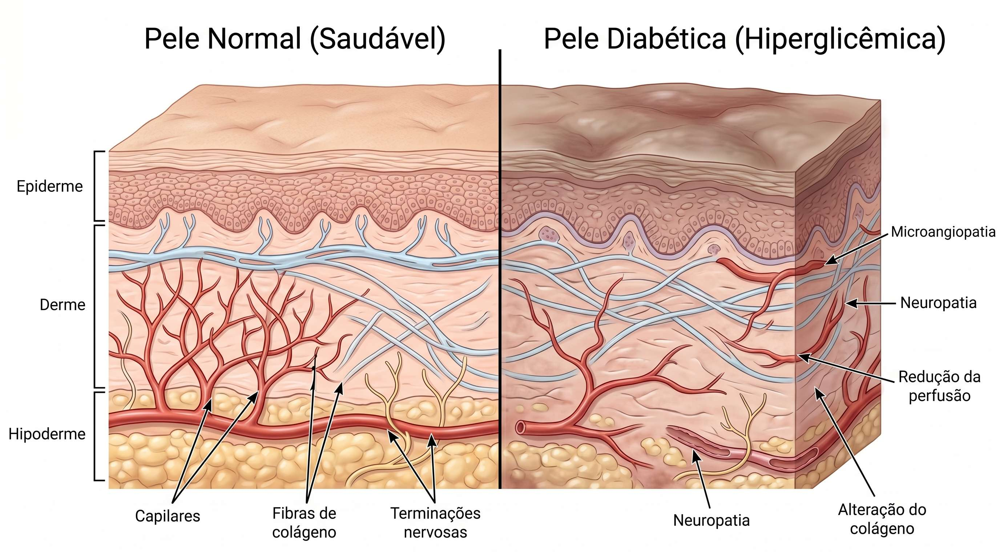
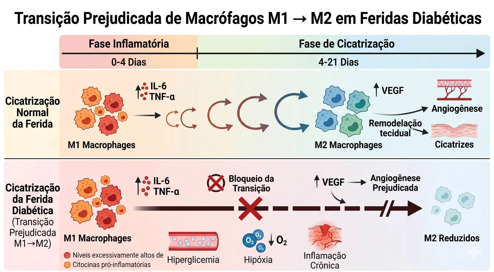
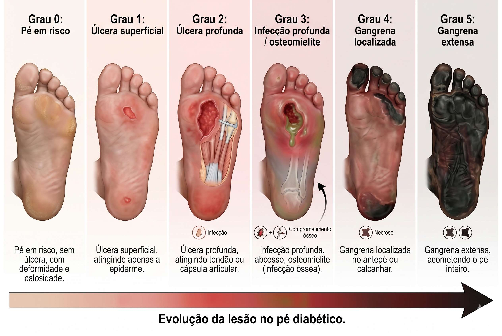
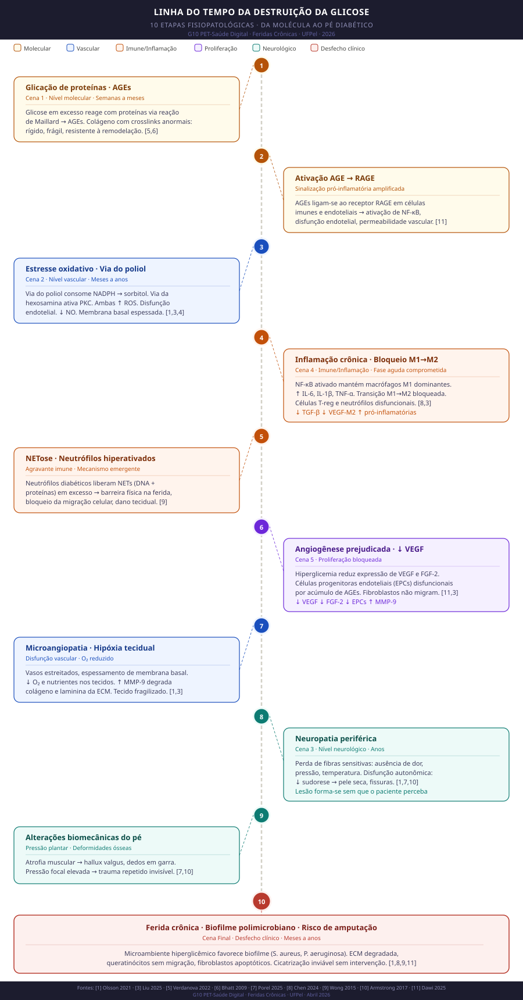
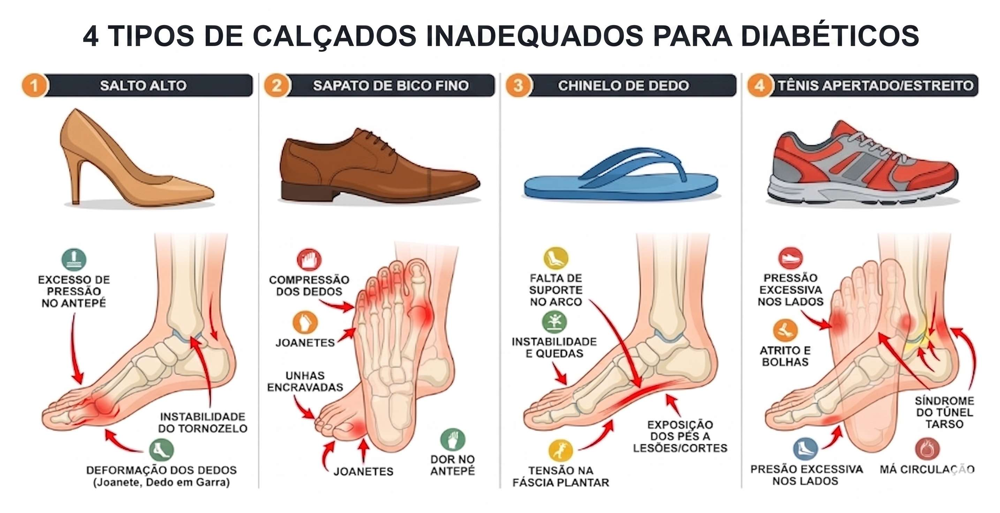
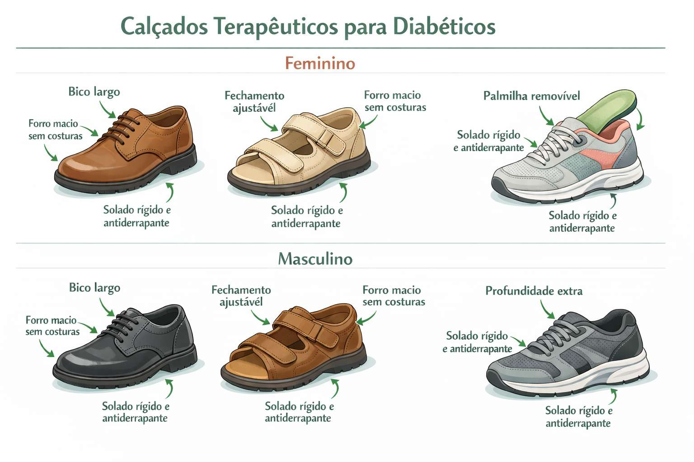
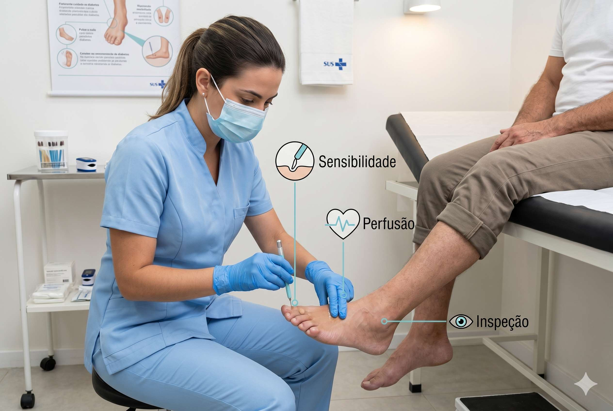

Em condições normais, o organismo possui um sistema de reparo tecidual altamente coordenado. Uma simples lesão cutânea desencadeia uma cascata de eventos biológicos — inflamação, proliferação celular, remodelamento — que restauram a pele em dias. Na diabetes, esse sistema entra em colapso progressivo. Antes mesmo de qualquer ferimento ocorrer, a hiperglicemia crônica já reescreveu a biologia do tecido.
Contexto · Por que isso importa?
Antes de qualquer lesão: o corpo já está comprometido

img/pele-normal-vs-diabetica.jpg
Comparação histológica: pele saudável vs. pele hiperglicêmica (vasos, espessura de camadas, nervos)
Pele diabética: uma bomba-relógio [1,5]
A hiperglicemia reduz a hidratação cutânea, compromete a barreira epidérmica e eleva a colonização por patógenos — tudo antes de qualquer ferida existir. Essa "pré-fragilização" é o ponto de partida do pé diabético.
Por que a pele pode aparecer mais escura?
A hiperpigmentação que se vê em algumas regiões da pele diabética — especialmente dobras e tornozelos — pode resultar de acantose nigricans (associada à resistência à insulina), depósito de hemossiderina por micro-hemorragias ou alterações na melanogênese induzidas pelos AGEs. Importante: nem sempre acontece — sua ausência não indica pele saudável nem descarta risco de ferida. [5]
A perda de sensibilidade protetora: o risco invisível [1,7,10]
A neuropatia periférica elimina a capacidade de sentir pressão, atrito e temperatura. Isso significa que um calçado apertado, uma pedra na meia ou uma costura mal posicionada podem provocar lesões progressivas sem que a pessoa perceba. Quando a ferida é notada, ela já evoluiu por dias ou semanas — muitas vezes já infectada.
Para engenharia, enfermagem e medicina
A cicatrização é um problema de biomecânica (resistência do colágeno), bioquímica (sinalização celular), vascular (perfusão de O₂) e neurológico (detecção de lesão). A diabetes ataca todos ao mesmo tempo. [3,4]
🎬 O Filme Começa Aqui
Mecanismo passo a passo · Da molécula ao pé diabético
A Linha do Tempo da Destruição
🍬
Cena 1 · Nível molecular — Semanas a meses
O açúcar se liga às proteínas: formação dos AGEs
Quando a concentração de glicose se mantém cronicamente elevada, moléculas de açúcar iniciam uma reação não-enzimática com os grupos amino livres de proteínas — a glicação. O processo começa com a formação instável de uma base de Schiff, que se estabiliza como produto de Amadori. Ao longo de semanas a anos, essa cadeia origina os Produtos Finais da Glicação Avançada (AGEs). [5,6]
Os AGEs acumulam-se especialmente no colágeno — proteína de meia-vida longa (10–15 anos na pele) — formando crosslinks anormais entre as fibras. O resultado é um colágeno rígido, frágil, resistente à remodelação enzimática e com sítios de ligação para integrinas e proteoglicanos bloqueados. [6]
Analogia para engenharia
Pense no colágeno como uma treliça metálica. Os AGEs funcionam como pontos de solda irregulares: criam rigidez excessiva, eliminam a flexibilidade e impedem que os "operários" (fibroblastos) consigam remodelar a estrutura.
Ativação do receptor RAGE: a amplificação sistêmica [11]
Os AGEs não causam dano apenas mecanicamente — eles também se ligam ao receptor celular RAGE (Receptor for Advanced Glycation End-products), presente em células imunes e endoteliais. Essa ligação ativa o fator de transcrição NF-κB, disparando uma cascata pró-inflamatória autossustentada: maior produção de ROS, aumento da permeabilidade vascular e disfunção endotelial progressiva. O eixo AGE → RAGE → NF-κB é considerado um dos principais amplificadores da lesão microvascular no diabetes. [11]
🩸
Cena 2 · Nível vascular — Meses a anos
Microangiopatia: os vasos perdem a função
A hiperglicemia ativa a via do poliol (que consome NADPH e gera sorbitol) e a via da hexosamina — ambas levando ao acúmulo de espécies reativas de oxigênio (EROs/ROS) e à disfunção endotelial. [1,3,4]
Espessamento da membrana basal
As paredes dos capilares engrossam, reduzindo a permeabilidade seletiva e a troca de oxigênio e nutrientes.
Queda na produção de NO
A biodisponibilidade de óxido nítrico cai, comprometendo vasodilatação, angiogênese e migração de células endoteliais.
Aterosclerose acelerada
Placas formam-se mais rapidamente nos grandes vasos, reduzindo o fluxo sanguíneo para os membros inferiores.
Consequência direta
O tecido já lesado recebe menos oxigênio. Menos O₂ = menos energia para proliferação celular = cura mais lenta. Um ciclo vicioso que se retroalimenta.
🧠
Cena 3 · Nível neurológico — Anos
Neuropatia periférica: o alarme é silenciado
Os nervos periféricos são especialmente vulneráveis à hiperglicemia. A neuropatia diabética resulta em: [1,7]
- Perda da sensibilidade protetora: o paciente não sente pressão, calor, dor ou objetos penetrantes no pé — incluindo calçados inadequados que causam lesão por atrito dia após dia [10]
- Disfunção autonômica: redução da sudorese → pele seca e com fissuras → porta de entrada para bactérias [1]
- Atrofia muscular intrínseca: deformidades podais (dedos em garra, proeminências ósseas) → pontos de pressão anormal [7,10]
A combinação é brutal: o paciente não percebe que tem uma lesão em formação, e quando percebe, ela já se tornou crônica. [1,10]
🔥
Cena 4 · Inflamação disfuncional — Fase aguda comprometida
A resposta inflamatória trava no modo "crônico"
Em uma ferida normal, a fase inflamatória dura 3–5 dias: neutrófilos chegam, fagocitam debris e bactérias, sinalizam para macrófagos que, em seguida, polarizam de M1 (pró-inflamatório) para M2 (reparador). Em pacientes diabéticos, esse switch não acontece. [8]
A hiperglicemia eleva a ativação do fator NF-κB, perpetuando a liberação de IL-6, IL-1β e TNF-α pelos macrófagos M1. Os macrófagos M2 — responsáveis por liberar VEGF e TGF-β — permanecem sub-representados. A ferida fica presa em inflamação sem progressão. [8,3]

img/macrofagos-m1-m2-diabetes.png
Diagrama comparando polarização M1/M2 em pele normal vs. diabética — eixo temporal com citocinas (IL-6, TNF-α, VEGF, TGF-β)
NETose: um agravante pouco conhecido [9]
Neutrófilos diabéticos liberam NETs (Neutrophil Extracellular Traps) em excesso — estruturas de DNA e proteínas que formam barreira física na ferida, bloqueando a migração celular e amplificando o dano ao tecido adjacente.
🧬
Cena 5 · Proliferação bloqueada — Semanas
Fibroblastos e queratinócitos não conseguem agir
A fase proliferativa — responsável pela formação de tecido de granulação, síntese de colágeno e re-epitelização — depende de fibroblastos e queratinócitos funcionais. Em ambiente hiperglicêmico:
| Célula | Função normal | Comprometimento na DM |
|---|---|---|
| Fibroblasto | Sintetiza colágeno, remodela MEC, contrai a ferida | AGEs bloqueiam adesão, migração e proliferação; apoptose aumentada via ROS/FOXO1 |
| Queratinócito | Migra para cobrir o leito da ferida (re-epitelização) | Hiperglicemia altera morfologia e diferenciação; AGEs upregulam MMP-9, degradando a MEC recém-formada |
| Célula endotelial | Forma novos vasos (angiogênese) para nutrir o tecido | Déficit de VEGF e HIF-1α; fatores antiangiogênicos upregulados; miRNAs silenciam genes angiogênicos |
⚙️ Mecanismo detalhado: AGEs × Colágeno × Fibroblastos
Glicose elevada
Liga-se a lisinas do colágeno via reação de Maillard
Produto Amadori
Intermediário instável (semanas a meses)
AGE acumulado
Crosslinks irreversíveis entre fibrilas de colágeno
RAGE ativado
Receptor celular aciona NF-κB → ROS → apoptose
Fibroblasto disfuncional
Não adere, não migra, não deposita MEC nova
Angiogênese prejudicada: VEGF↓ e EPCs disfuncionais [11]
Além do bloqueio direto nos fibroblastos e queratinócitos, a hiperglicemia compromete a formação de novos vasos — processo essencial para nutrir o tecido de granulação em formação. O VEGF (Vascular Endothelial Growth Factor), principal indutor da neovascularização, tem sua expressão reduzida pelo ambiente hiperglicêmico. Paralelamente, o acúmulo de AGEs compromete o número e a função das células progenitoras endoteliais (EPCs), que normalmente participam do reparo vascular. Sem novos vasos, o tecido de granulação não se forma — e sem granulação, não há re-epitelização. [11]
O desequilíbrio entre MMP-9 (metaloprotease que degrada a ECM) e seu inibidor TIMP-1, induzido pela sinalização via TNF-α/NF-κB, agrava ainda mais a destruição do andaime extracelular necessário para a migração celular. [11,3]
🦠
Cena 6 · Infecção e biofilme — Semanas a meses
Bactérias colonizam o tecido: formação de biofilme
A tríade — barreira cutânea comprometida + imunidade celular reduzida + ambiente rico em glicose — cria um habitat ideal para patógenos. Em feridas diabéticas, Staphylococcus aureus, Pseudomonas aeruginosa e bactérias anaeróbias formam biofilmes — comunidades microbianas revestidas por matriz de polissacarídeos que as torna até 1.000× mais resistentes a antibióticos e à fagocitose. [1,8]
O biofilme perpetua a resposta inflamatória crônica e inibe diretamente a proliferação de fibroblastos e a síntese de colágeno — fechando o círculo vicioso da ferida que não cicatriza. [1,3]
Glicose elevada = "buffet" para bactérias
O exsudato da ferida diabética apresenta concentrações de glicose até 4× maiores que o plasma. Esse ambiente hiperosmolar favorece seletivamente patógenos oportunistas sobre a microbiota protetora normal.
🦶
Cena Final · O desfecho clínico — Meses a anos
O Pé Diabético: quando todos os mecanismos convergem
O pé diabético é o resultado da convergência simultânea de todos os mecanismos descritos. Uma pequena fissura — por vezes de uma unha encravada, pressão de calçado inadequado ou simples atrito — serve de porta de entrada em um tecido que já está funcionalmente comprometido.

img/pe-diabetico-estadiamento.jpg
Diagrama didático mostrando estadiamento de úlcera diabética (Wagner graus 0–5): lesão superficial, profunda, osteomielite e gangrena
Sequência fatal sem intervenção [1,10]
Lesão → infecção → biofilme → inflamação crônica → tecido necrótico → osteomielite → amputação. Cada etapa demora semanas; o tratamento precoce pode interromper a cascata.
Dimensão da crise [1]
A cada 30 segundos, uma amputação de membro inferior é realizada por diabetes no mundo. O custo global de tratamento de úlceras diabéticas deve superar US$ 11 bilhões até 2027.
Síntese Visual · Linha do Tempo Completa

Figura · Síntese visual das 10 etapas da destruição da glicose no organismo — da glicação molecular ao desfecho clínico. G10 PET-Saúde Digital · UFPel · 2026. [1,3,5,6,7,8,9,10,11]
"A ferida diabética não é um problema simples de pele: é o ponto de convergência visível de uma falência sistêmica molecular, vascular e neurológica. Tratar a ferida sem tratar o metabolismo é consertar o sintoma sem resolver a causa."
Síntese · O que fica na cabeça
Por que a ferida diabética não fecha?
AGEs → Colágeno rígido
A matriz extracelular glicada impede que fibroblastos adiram, migrem e depositem novo colágeno.
Isquemia local
Microangiopatia e aterosclerose reduzem o fluxo de O₂ e nutrientes — essenciais para toda reação celular de reparo.
Silêncio neuropático
Sem dor, sem alerta. A lesão avança por dias ou semanas antes de ser percebida.
Inflamação presa no M1
A polarização M1→M2 não ocorre. A fase inflamatória nunca progride para proliferação.
Biofilme intratável
Bactérias protegidas por matriz polissacarídica recrutam mais inflamação e bloqueiam a cicatrização.
Angiogênese falha
Sem novos vasos, o tecido de granulação não se forma. Sem granulação, não há re-epitelização.
Visualização interativa · Animação científica
Veja cada mecanismo dentro do pé diabético
Uma animação com 10 cenas mostra — em corte anatômico do pé — como a glicação, a inflamação, a neuropatia e o biofilme atuam no tecido real. Da molécula à ferida crônica, passo a passo.
Prevenção · Um detalhe que define tudo
Calçados adequados e inadequados para o pé diabético
Como a neuropatia elimina o sinal de dor, o calçado deixa de ser uma questão de conforto e passa a ser uma questão de sobrevivência tecidual. Estudos mostram que pressão repetida em pontos de proeminência óssea é a principal causa mecânica de úlceras plantares no pé diabético [10]. A escolha correta do calçado é, portanto, uma intervenção terapêutica — não um acessório.

img/calcados-inadequados-pe-diabetico.jpg
Montagem com 4 tipos de calçados inadequados: salto alto, bico fino, chinelo aberto, sapato apertado — com setas indicando os pontos de pressão problemáticos no pé

img/calcados-adequados-pe-diabetico.jpg
Montagem com 2–3 tipos de calçados adequados: tênis de bico largo, calçado terapêutico fechado, sapato de couro macio com solado firme — com indicações dos recursos protetores
Evitar sempre
Salto alto, bico fino ou pontiagudo, chinelos abertos, calçados muito apertados ou muito largos, materiais sintéticos sem respiração, costuras internas salientes.
Preferir sempre
Tênis ou sapato fechado de couro macio, bico largo, solado firme e antiderrapante, palmilha ortopédica removível, sem costuras internas, comprido 1 cm além do dedo mais longo.
Inspecionar diariamente
Por dentro do calçado antes de calçar (pedras, objetos, dobras). Inspecionar o próprio pé com espelho se necessário. Nunca andar descalço, mesmo dentro de casa. [10]
Adaptação gradual
Calçados novos devem ser usados por períodos curtos inicialmente (1–2h), aumentando progressivamente. Verificar marcas de pressão na pele logo após retirar. [10]
Por que isso é tão crítico na diabetes? [1,7,10]
Em pessoas sem neuropatia, um calçado ruim dói — e é trocado. Em pessoas com perda de sensibilidade protetora, o mesmo calçado cria lesão por pressão repetida durante horas, dia após dia, completamente imperceptível. Quando a ferida é encontrada, frequentemente já existe infecção instalada. Orientar sobre calçados é, portanto, uma competência clínica essencial para enfermagem, medicina e equipes de reabilitação.
Implicações clínicas · Para a prática
O que esses mecanismos significam na beira do leito?

img/avaliacao-pe-diabetico-clinical.jpg
Fotografia clínica mostrando avaliação do pé diabético: teste de monofilamento, palpação de pulsos, inspeção de calosidades
Controle glicêmico é fundamento [3,4,8]
Reduzir a glicemia reduz a formação de AGEs, diminui a disfunção endotelial e restaura parcialmente a polarização macrofágica. Não existe tratamento de ferida eficaz sem controle metabólico associado.
Desbridamento e controle de biofilme [1,8]
Remover tecido necrótico e biofilme é obrigatório: sem isso, a inflamação crônica persiste e qualquer curativo perde o efeito. O desbridamento transforma a ferida crônica em aguda — reiniciando a cascata normal.
Perspectivas terapêuticas emergentes [4,8]
Inibidores de DPP-4, metformina tópica, hidrogéis com GLP-1, terapia por pressão negativa (NPWT) e substitutos de pele bioengenheirados atacam diferentes nós da cascata, com resultados promissores em estudos pré-clínicos e clínicos.
Para a engenharia biomédica
Curativos inteligentes com sensores de pH, glicose e temperatura, scaffolds de colágeno não-glicado e sistemas de liberação controlada de VEGF são as fronteiras de pesquisa para reverter os mecanismos deste infográfico.
Fixação de conceitos · Teste seus conhecimentos
Você entendeu o mecanismo?
Seis perguntas de múltipla escolha cobrindo os conceitos centrais do infográfico. Clique em uma alternativa para ver o feedback explicado.
Para pensar além · Reflexão aberta
Perguntas que não têm resposta simples
Estas perguntas não têm alternativas. Cada uma desdobra em outra — o objetivo não é a resposta certa, mas o raciocínio que ela exige.